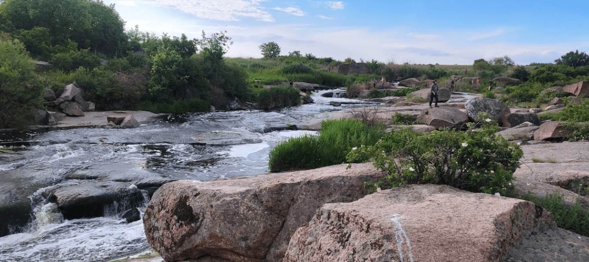
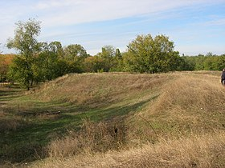
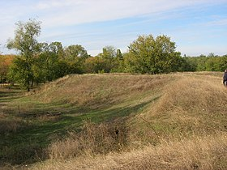

Джерело 7 Чудес України. Шолохівський каскадний водоспад
Шолохівський каскадний водоспад
Цікаве місце, яке багато хто рекомендує до відвідування.
Як завжди буває, дороги тут погані та інфраструктури немає, зате місцеві намагаються стежити за чистотою.
Також, є гарний вид на гранітні стіни та річку в районі мосту між Токовським та Шолоховим.
Шолохівський водоспад на р. Кам’янка у Дніпропетровській області має ще одну назву – «Червоне каміння». Адже береги річки переважно з граніту червоного кольору. Такий граніт використаний в архітектурних спорудах області. Сам водоспад не такий великий, його довжина – 14 м, перепади висоти – до кількох метрів. Але Шолохівський водоспад дуже старий, він свідок геологічної історії України, що утворився ще в мезозойську еру.
 
Фортеця, збудована у 1688 р. на місці, як вважають історики, давнього козацького міста Самар за наказом московських царів Івана Олексійовича та Петра Олексійовича і правительки Софії Олексіївни для московського гарнізону. Вважається першою фортецею, збудованою московитами на території Війська Запорозького Низового. Створення фортеці стало одним із перших актів у наступі царату на території Війська Запорозького.
Богородицька фортеця (унизу за річкою Кримка) на місці Самарі.
Територія Богородицької фортеці була більшою за фортецю міста Самар й склала 250×300 м. Згодом фортеця була розбудована у другий раз й отримала назву Новобогородицька фортеця.
Спорудження Богородицької фортеці було викликане необхідністю зміцнити тилову базу московсько-українських військ у їх боротьбі проти Кримського ханства, а водночас посилити контроль уряду над Запорозькою Січчю.

Фортеця, збудована у 1688 р. на місці, як вважають історики, давнього козацького міста Самар за наказом московських царів Івана Олексійовича та Петра Олексійовича і правительки Софії Олексіївни для московського гарнізону. Вважається першою фортецею, збудованою московитами на території Війська Запорозького Низового. Створення фортеці стало одним із перших актів у наступі царату на території Війська Запорозького.
Богородицька фортеця (унизу за річкою Кримка) на місці Самарі.
Територія Богородицької фортеці була більшою за фортецю міста Самар й склала 250×300 м. Згодом фортеця була розбудована у другий раз й отримала назву Новобогородицька фортеця.
Спорудження Богородицької фортеці було викликане необхідністю зміцнити тилову базу московсько-українських військ у їх боротьбі проти Кримського ханства, а водночас посилити контроль уряду над Запорозькою Січчю.